اوقات شرعی و اذانِ سر وقت
اوقات برای مکان شما محاسبه میشود، اذان در پسزمینه پخش میشود و برای هر نماز خودتان تعیین میکنید که اذان پخش شود، فقط اعلان بیاید یا خاموش باشد.

برای همانجایی که شما هستید
اوقات شرعی بر پایهٔ محاسبهٔ نجومی و با طول و عرض جغرافیایی محل اقامت شما محاسبه میشود: اذان صبح، طلوع آفتاب، اذان ظهر، غروب، اذان مغرب و نیمهشب شرعی. اذان عصر و عشاء را هم با یک تنظیم میتوانید به صفحه اضافه کنید. تاریخ شمسی، قمری و میلادی هم در همان صفحه است.
- با لمس پین، مکان فعلی را با GPS بخوانید؛ یا شهر و آدرس را جستوجو کنید، روی نقشه دوبار ضربه بزنید یا مختصات را وارد کنید.
- تقویم شرعی هفتگی و ماهانه، با وقایع هر روز و امکان ذخیرهٔ PDF تقویم ماه یا کل سال.
- امساک اختیاری: اگر بخواهید، در تنظیمات «امساک (احتیاط)» را روشن کنید تا چند دقیقه (۵، ۱۰، ۱۵ یا ۲۰) پیش از اذان صبح در فهرست اوقات بیاید. امساک اذان و اعلان ندارد و شروع روزه همان اذان صبح است.
- اوقات، قبله و تقویم بدون اینترنت کار میکنند. موقعیت شما فقط وقتی برنامه باز است و با اجازهٔ خودتان خوانده میشود.
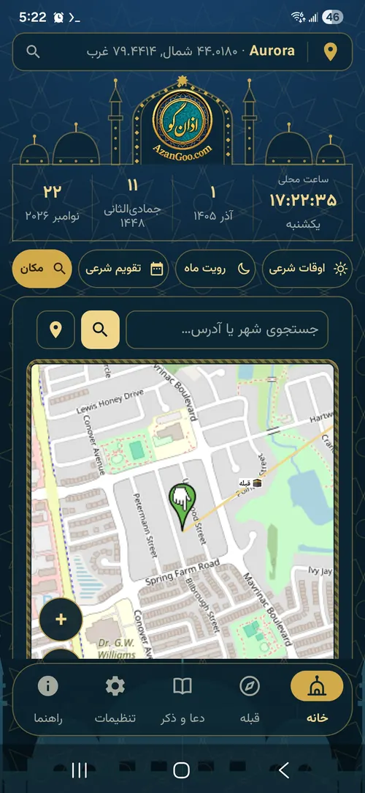
شمارش معکوس تا اذان بعدی
صفحهٔ خانه اوقات امروز، زمان باقیمانده تا اذان بعدی و دعایی را که پیش از آن پخش میشود نشان میدهد.
- حلقهٔ طلایی نشان میدهد چقدر از زمان مانده است. حلقه پر شروع میشود و هرچه اذان نزدیکتر شود خالیتر میشود.
- در دقایق خیلی نزدیک به اذان، رنگ حلقه، نماد و زمان باقیمانده آرامآرام از طلایی به کهربایی گرمتر تبدیل میشود.
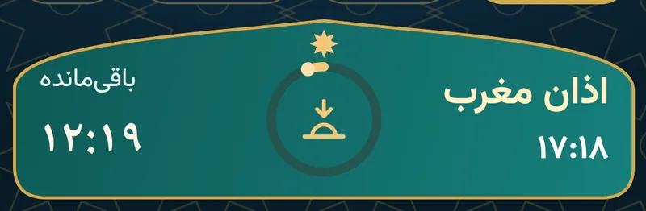
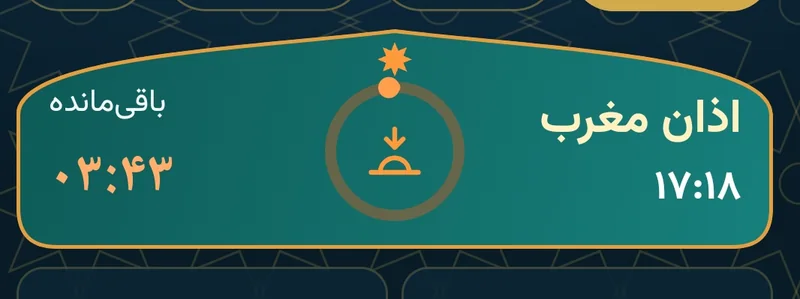
اوقات یک هفته یا یک ماه، یکجا
تقویم شرعی اوقات شرعی را با تاریخ میلادی و روز قمری نشان میدهد و در فارسی تاریخ شمسی هم دارد.
- سه زبانه: «هفتگی»، «ماهانه» و «وقایع».
- هر ردیف یک روز است: تاریخ و روز هفته، روز قمری و اوقات شرعی همان مکان با روشی که انتخاب کردهاید.
- لوزی طلایی کنار روز قمری یعنی آن روز وقایعی دارد؛ روی ردیف بزنید تا بخوانید.
- در فارسی میتوانید تقویم اصلی را بین شمسی و میلادی عوض کنید.
- «دانلود PDF»: فقط همین ماه (یک صفحهٔ A4) یا کل سال (۱۲ صفحهٔ A4) را برای مکان خودتان ذخیره کنید.
تاریخهای قمری بر پایهٔ رؤیت هلال برای مکان شما محاسبه میشوند و ممکن است تا یک روز با اعلام رسمی فرق کنند.
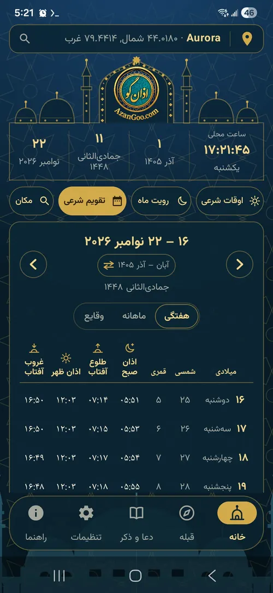

مناسبتهای هر روز، با توضیح کامل
در تب «وقایع» روزهایی که مناسبتی دارند با لوزی طلایی مشخص شدهاند. روی روز بزنید تا فهرست مناسبتهایش باز شود.
- هر مناسبت یک عنوان دارد؛ با لمس آن توضیح کامل و ریشهٔ تاریخیاش باز میشود.
- پایین مناسبتهای آن روز، بخش «تتمهٔ این ماه» مناسبتهای دیگر همان ماه قمری را هم نشان میدهد.
- تقویم را ماه به ماه ورق بزنید و بدون ترک صفحه، مناسبت هر روز را بخوانید.
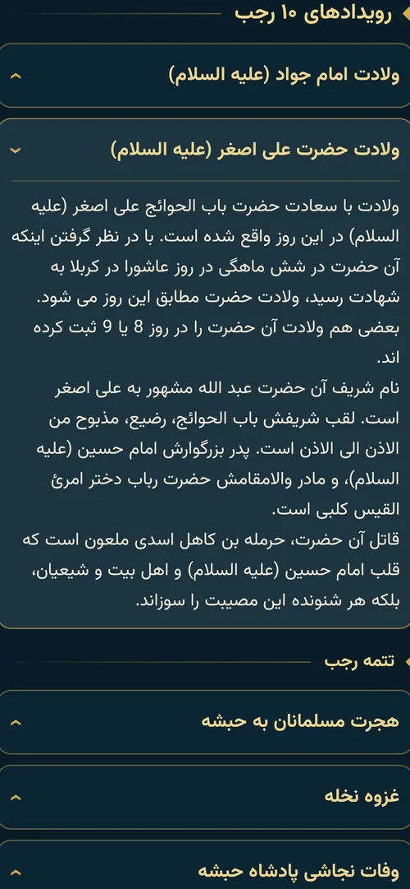
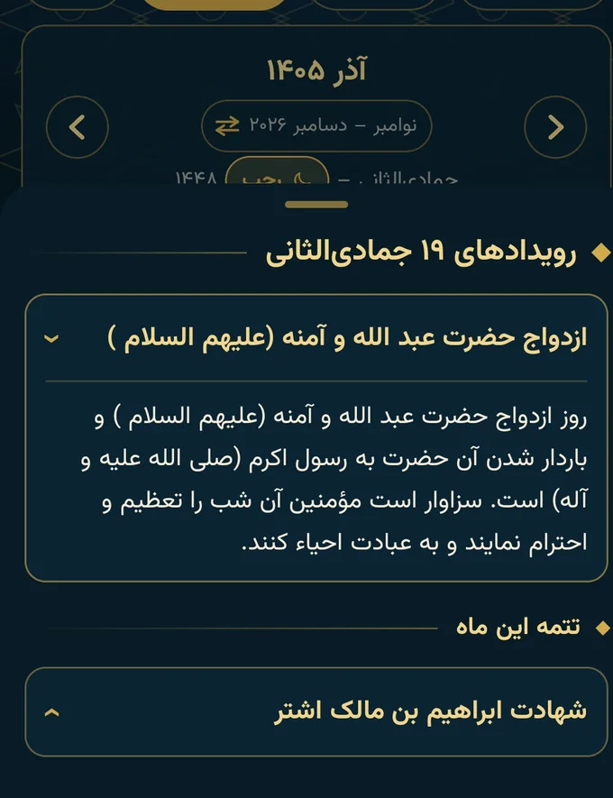
اذان را سر وقت بشنوید
اذان در پسزمینه و روی صفحهٔ قفل پخش میشود، بدون اینکه برنامه باز باشد. برای هر اذان خودتان تصمیم میگیرید که چه اتفاقی بیفتد: پخش اذان، فقط اعلان یا خاموش. روی دکمهها بزنید و نتیجه را ببینید.
سه صدای اذان داخل برنامه است و صداهای بیشتری برای شنیدن و دانلود هست. انتخاب کانال صدا، لرزش جداگانه برای هر نماز و دکمهٔ قطع اذان در اعلان هم در تنظیمات هست.
برای پخش مطمئن، اجازهٔ اعلان و آلارم دقیق را بدهید و در تنظیمات باتری، اذان گو را روی «بدون محدودیت» بگذارید. در بعضی گوشیها (شیائومی، سامسونگ، هواوی، اوپو و…) بدون این کار ممکن است سیستم اذان را متوقف کند. در جلسه، کلاس یا مسجد هم کافی است اذان را روی «فقط اعلان» بگذارید.
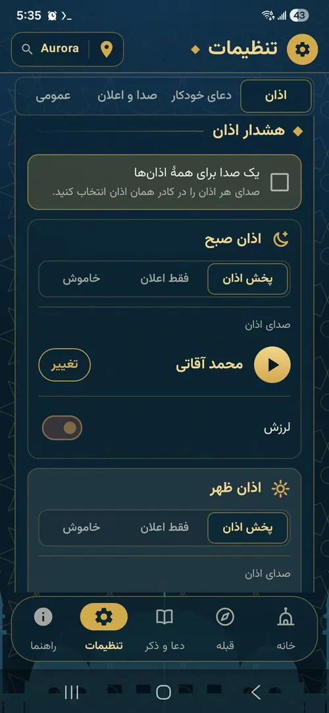

همهٔ صداها در اختیار شماست
همهٔ صداهای خودکار برنامه قابل تنظیماند. هر زمان خواستید، در تنظیمات میتوانید همهٔ صداهای خودکار، از جمله اذان و دعا، را خاموش کنید و فقط برای دیدن اوقات شرعی و رؤیت ماه از برنامه استفاده کنید.
دعا، پیش و پس از اذان
اذان را با دعا کامل کنید. هر دعا را برای صبح، ظهر یا مغرب جداگانه روشن کنید و هر وقت خواستید خاموشش کنید. فایل صوتی دعاها داخل برنامه نیست و یکبار دانلود میشود؛ بعد از آن بدون اینترنت هم پخش میشوند.
- دعای روزهای هفته، پیش از اذان.
- دعای فرج امام زمان (عج)، پیش از اذان.
- دعای عهد، پس از اذان.
- دکمهٔ پخش کنار هر دعا برای شنیدن آن، حتی پیش از دانلود.
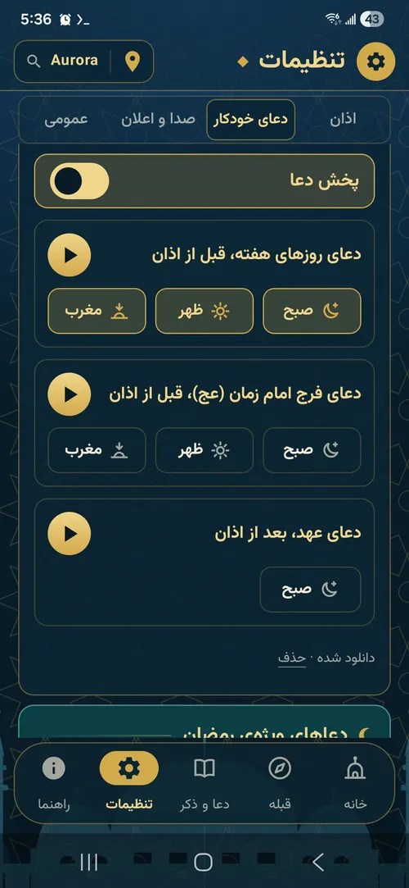
رمضان، با دعاهای خودش
پیش از اذان صبح دعای سحر و پیش از اذان مغرب دعای افطار پخش میشود. دعای مخصوص ماه رمضان هم بعد از اذان میآید. همه را میتوانید فقط برای نوبتهای دلخواه فعال کنید.
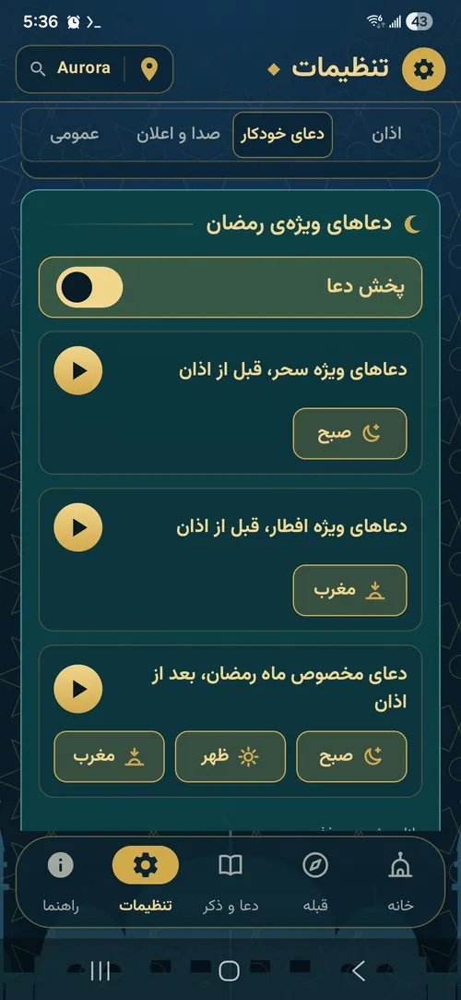
روشی را که به آن اعتماد دارید انتخاب کنید
روش پیشفرض هنگام نخستین راهاندازی بر اساس مکانی که انتخاب میکنید تعیین میشود: در ایران روش مؤسسهٔ ژئوفیزیک دانشگاه تهران، در افغانستان روش کراچی و در بیشتر جاهای دیگر روش اذان گو. اگر روش دیگری را ترجیح میدهید، از تنظیمات عمومی عوضش کنید؛ اوقات و زمان پخش اذان همان لحظه با روش جدید محاسبه میشوند.
روش محاسبه فقط فجر، مغرب، عشاء و نیمهشب را تغییر میدهد؛ ظهر، طلوع و غروب در همهٔ روشها یکسان است. عصر هم فقط با انتخاب «حنفی» در «وقت عصر» تغییر میکند. روش کمیتهٔ رؤیت هلال (Moonsighting) هم در فهرست هست.
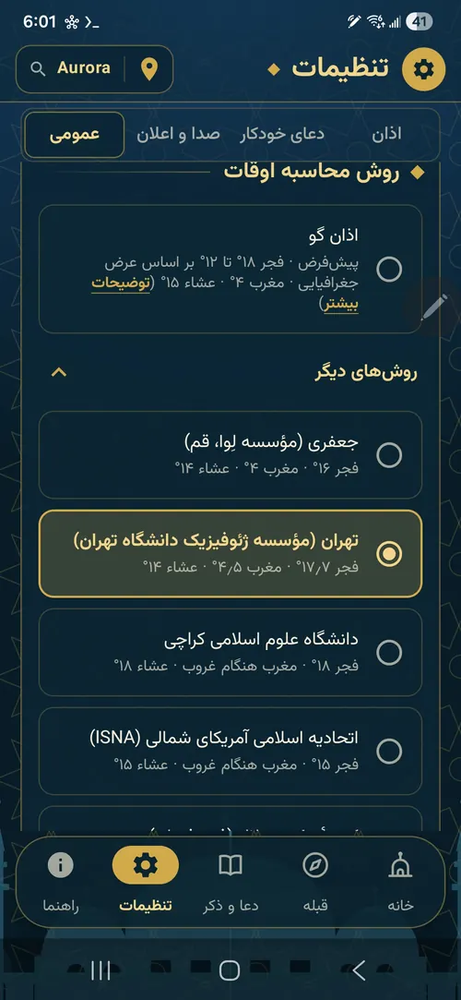
بقیهٔ برنامه را هم ببینید

رؤیت ماه و ماه قمری
ماه همین امشب، بهترین زمان و جهت دیدن هلال و پیشبینی ۲۹ یا ۳۰ روزه بودن ماه.
مشاهده ←
ویجت و اعلانها
اذان بعدی و شمارش معکوس روی صفحهٔ اصلی گوشی، ویجت ماه و اعلانهای اذان و دعا.
مشاهده ←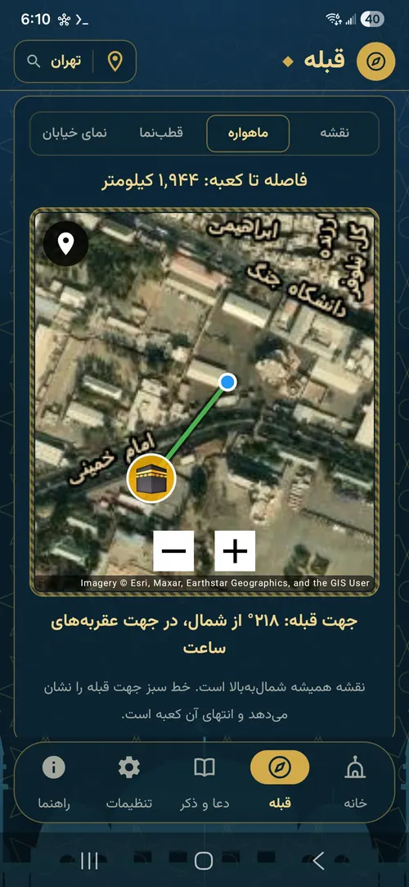
سایر امکانات
قبلهنما، دعا و زیارت، تسبیح، چهار زبان، پوسته، قالب ساعت، کار بدون اینترنت و حریم خصوصی.
مشاهده ←به آزمایشکنندگان اذان گو بپیوندید
اذان گو در حال آزمایش بسته در گوگل پلی است. اگر آزمایشکنندهاید، با سه قدم برنامه را نصب کنید و نظرتان را برایمان بفرستید.
- ۱ایمیل حساب گوگل خود را در کادر زیر بنویسید و بفرستید تا به فهرست آزمایشکنندگان اضافه شود.
- ۲با همان حساب گوگل، لینک زیر را باز کنید و گزینهٔ پیوستن به آزمایش را بزنید.
- ۳اذان گو را از گوگل پلی نصب کنید و هر مشکل یا پیشنهاد را برای app@azangoo.com بنویسید.
ایمیل حساب گوگلی را بنویسید که روی گوشی اندرویدتان وارد شده است (لازم نیست حتماً Gmail باشد). با زدن دکمه، برنامهٔ ایمیل خودتان با پیام آماده باز میشود؛ فقط «ارسال» را بزنید. این صفحه ایمیل شما را جایی ذخیره یا ارسال نمیکند. اگر برنامهٔ ایمیل باز نشد، ایمیل خود را مستقیم برای app@azangoo.com بفرستید.
لینک فقط برای ایمیلهایی کار میکند که در فهرست آزمایشکنندگان باشند.